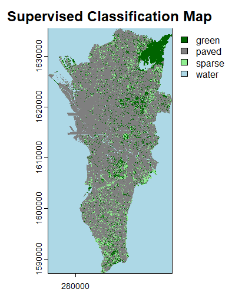

Portfolio
Selected Research & Visualizations
Spatial Modeling

EVI and NDVI Spatial Analysis
Vegetation index mapping evaluating environmental greenness, canopy cover health, and urban ecological gradients.
Wetland Assessment

TSS - Las Piñas-Parañaque Wetland
Total Suspended Solids evaluation and remote sensing tracking across critical protected wetland zones.
Statistical Modeling

Ecological R Plot Outputs
Custom data visualizations generated via R script pipelines for habitat metrics and ecological trend analysis.

Interactive Web App Embed
NCR Urban Connectivity Portal
Live interactive mapping tool loaded directly into your portfolio via iframe.